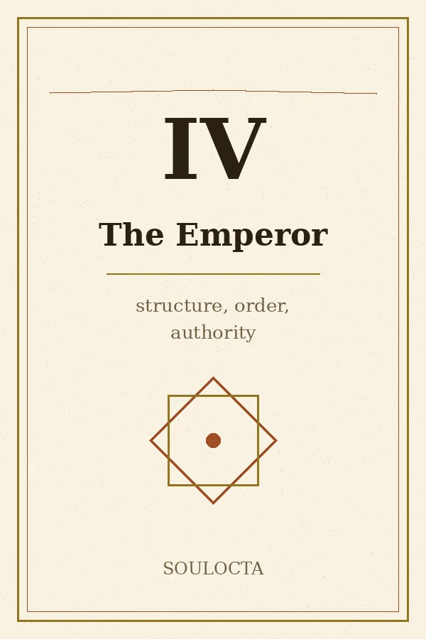

Arcana 4 · The Emperor
The Emperor — Arcana 4 of the Destiny Matrix
Arcana 4, the Emperor, is the card of structure that holds. In the Destiny Matrix it marks the person who builds the rules, the systems and the boundaries that let everything else work. The Emperor is not about shouting. It is about the quiet authority of someone who decides, writes it down, and does what they said.

What does the Emperor mean in the Destiny Matrix?
The Emperor as a Destiny Matrix position means structure is your power. Wherever this card sits, the area improves when you set clear rules, clear roles and clear consequences — and it falls apart when everything is left vague. The traditional image is a seated figure on a stone throne, which is the whole meaning: authority that does not need to move, because the structure does the work.
| Zone | Positive (+) | Negative (−) | Actionable shift |
|---|---|---|---|
| Centre | Order and responsibility; decisions made and kept | Carrying more than your share; rules hardening into control | Delegate one real decision and let someone else be wrong |
| Money line | Structure: budget followed, rate charged, contract signed | Refusing good opportunities because they do not fit the plan | Review the structure once a quarter; change one rule |
| Love line | Reliability; keeping your word; protecting the household | Reliability looking like coldness; making rules alone | Write the household rules together and revisit them yearly |
| Talent | Seeing the structure inside a mess; building systems | Systems that live only in your head | Write one system down so others can run it |
| Karmic tail | Learning that order serves people, not the other way round | Chaos or tyranny; deciding everything or deciding nothing | Keep one small rule for one week, about yourself |
The Emperor as your centre (E)
The Emperor in the centre means your whole chart is organised around order and responsibility. People trust you with decisions because you make them and stand by them, and they come to you when a situation needs someone to take charge. You are at your best when there is something to organise and a standard to hold, and at your worst when everything is uncertain and nobody will decide.
The Emperor in your money line
The Emperor in the money line means your income grows through structure: a budget that is actually followed, a rate that is actually charged, a contract that is actually signed. Emperor money people do well in salaried roles, in businesses with clear pricing, and in any work where reliability is the product. The money is rarely spectacular and rarely disappears.
The Emperor in your love line
The Emperor in the love line means you show love through reliability: you are there, you keep your word, you protect the household. Your partner knows what to expect from you, and that steadiness is a deep gift in a world that keeps changing. The trap is that reliability can look like coldness, and your partner may want warmth and spontaneity, not just a well-run home.
The Emperor in your talents
The Emperor in your talents means you have an organising talent: you see the structure inside a mess and you can build the system that fixes it. Often it is something practical — planning, managing, budgeting, leading a small team — and other people feel the relief of your order before they can name what you did.
The Emperor reversed, blocked or low
A blocked Emperor looks like either chaos or tyranny, and sometimes both in the same week. The chaotic version cannot decide, cannot keep a boundary and cannot finish a plan, so everything drifts. The tyrannical version decides everything, controls everyone and cannot hear a single objection, so everything looks orderly and feels dead.
How to work with the Emperor this month
Pick one area of your life that feels messy and give it one written rule. Money, time, health, work — one area, one rule, written down where you can see it. A rule that fits on one line is a rule you can keep, and a rule kept for a month becomes a structure, and a structure becomes the calm that the Emperor is really about.
How to turn The Emperor from minus to plus
Five shifts, from minus to plus. First, I hold every decision myself becomes I delegate one real decision, not just a task. Second, I keep rules that no longer work becomes I review one rule every quarter. Third, I show love only through reliability becomes I add warmth and spontaneity on purpose. Fourth, my systems live only in my head becomes I write one system down so others can run it. Fifth, I control to feel safe becomes I keep one rule about myself, not about others.
Check where this energy sits in your free Destiny Matrix chart — enter your birth date and see whether The Emperor is your centre, your talent, or your karmic tail. If it is, also read your money line and the compatibility calculator.
Related guides
Keep reading: destiny matrix vs numerology · destiny matrix vs tarot · destiny matrix for beginners · destiny matrix FAQ · the Chariot, arcana 7 of the Destiny Matrix · Justice, arcana 8 of the Destiny Matrix · the Lovers, arcana 6 of the Destiny Matrix · the Devil, arcana 15 of the Destiny Matrix · the Sun, arcana 19 of the Destiny Matrix · karmic tail 18-6-6, Love Magic · karmic tail 15-20-5, the Rebel · karmic tail 9-9-18, Magical Knowledge · the Magician, arcana 1 of the Destiny Matrix · the Empress, arcana 3 of the Destiny Matrix · the Emperor, arcana 4 of the Destiny Matrix · the Wheel of Fortune, arcana 10 of the Destiny Matrix · Strength, arcana 11 of the Destiny Matrix · the World, arcana 21 of the Destiny Matrix · karmic tail 15-8-11, Physical Suffering · karmic tail 21-4-10, Oppressed Soul · karmic tail 12-19-7, Warrior · karmic tail 6-17-11, Wasted Talent · all 22 arcana meanings · all karmic tail guides · Destiny Matrix compatibility calculator · what is the Destiny Matrix · how to calculate the Destiny Matrix.
Frequently asked questions
What does arcana 4, the Emperor, mean in the Destiny Matrix?
Arcana 4, the Emperor, means structure, order and authority in the Destiny Matrix. The Emperor marks the person who builds the rules and systems that let everything else work, and the position it sits in shows where that authority belongs.
Is the Emperor a good arcana to have as your centre?
The Emperor is a strong centre arcana because it gives you authority and discipline. The risk is carrying more than your share, so a centre Emperor needs to delegate one real decision and let someone else be wrong about it.
What does the Emperor mean in the money line?
The Emperor in the money line means your income grows through structure. A budget that is followed, a rate that is charged, a contract that is signed — that is the whole method. The warning is rigidity, so review the structure once a quarter and change one rule.
What does the Emperor mean in love?
The Emperor in the love line means you show love through reliability. You are there, you keep your word, you protect the household. The trap is that reliability can look like coldness, so warmth and spontaneity need to be added on purpose, every week.